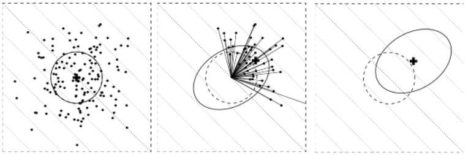
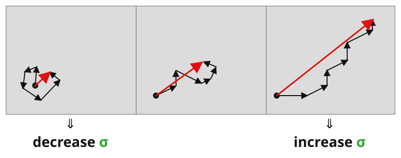

CMAES
Jérémie Decock
17/12/2022
$$
\newcommand{\vs}[1]{\boldsymbol{#1}} % vector symbol (\boldsymbol, \textbf or \vec)
\newcommand{\ms}[1]{\boldsymbol{#1}} % matrix symbol (\boldsymbol, \textbf)
$$
CMA-ES
Hansen, N. and A. Ostermeier (2001) Completely Derandomized Self-Adaptation in Evolution Strategies. Evolutionary Computation, 9(2), pp. 159-195
Nikolaus Hansen now at Inria in RandOpt team (CMAP)
CMA-ES:
For difficult optimisation problems in continuous domain
Usually considered as the best black box algorithm
Search space : between 3 and a hundred
CMA-ES (Covariance Matrix Adaptation Evolution Strategy) is an evolutionary algorithm for difficult non-linear non-convex black-box optimisation problems in continuous domain.
It’s considered as state-of-the-art in evolutionary computation and has been adopted as one of the standard tools for continuous optimisation in many (probably hundreds of) research labs and industrial environments around the world. The CMA-ES is typically applied to unconstrained or bounded constraint optimization problems, and search space dimensions between three and a hundred. The method should be applied, if derivative based methods, e.g. quasi-Newton BFGS or conjugate gradient, (supposedly) fail due to a rugged search landscape (e.g. discontinuities, sharp bends or ridges, noise, local optima, outliers). If second order derivative based methods are successful, they are usually faster than the CMA-ES: on purely convex-quadratic functions, f(x)=xTHx, BFGS (Matlabs function fminunc) is typically faster by a factor of about ten (in terms of number of objective function evaluations needed to reach a target function value, assuming that gradients are not available). On the most simple quadratic function f(x)=||x||2=xTx BFGS is faster by a factor of about 30.
Similar to quasi-Newton methods (but not inspired by them), the CMA-ES is a second order approach estimating a positive definite matrix within an iterative procedure (more precisely: a covariance matrix, that is, on convex-quadratic functions, closely related to the inverse Hessian). This makes the method feasible on non-separable and/or badly conditioned problems. In contrast to quasi-Newton methods, the CMA-ES does not use or approximate gradients and does not even presume or require their existence. This makes the method feasible on non-smooth and even non-continuous problems, as well as on multimodal and/or noisy problems. It turns out to be a particularly reliable and highly competitive evolutionary algorithm for local optimization (Hansen & Ostermeier 2001) and, surprising at first sight, also for global optimization (Hansen & Kern 2004, CEC 2005, Hansen 2009 in BBOB-2009).
The CMA-ES has several invariance properties. Two of them, inherited from the plain evolution strategy, are (i) invariance to order preserving (i.e. strictly monotonic) transformations of the objective function value (that is, e.g., ||x||2 and 3||x||0.2-100 are equivalent objective functions with identical performance of CMA-ES), and (ii) invariance to angle preserving (rigid) transformations of the search space (including rotation, reflection, and translation), if the initial search point is transformed accordingly. Invariances are highly desirable: they imply uniform behavior on classes of functions and therefore imply the generalization of empirical results.
The CMA-ES does not require a tedious parameter tuning for its application. In fact, the choice of strategy internal parameters is not left to the user (arguably with the exception of population size λ). Finding good (default) strategy parameters is considered as part of the algorithm design, and not part of its application—the aim is to have a well-performing algorithm as is. The default population size λ is comparatively small to allow for fast convergence. Restarts with increasing population size (Auger & Hansen 2005) improve the global search performance. For the application of the CMA-ES, an initial solution, an initial standard deviation (step-size, variables should be defined such that the same standard deviations can be reasonably applied to all variables, see also here) and, possibly, the termination criteria (e.g. a function tolerance) need to be set by the user. The most common applications are model calibration (e.g. curve fitting) and shape optimisation.
CMA-ES
Like the cross-entropy method, a distribution is improved over time based on samples
CMA uses multivariate Gaussian distributions with 3 parameters
$\boldsymbol{x} \sim \mathcal{N}$
(
$ \boldsymbol{m} $ ,
$ \sigma^2 $
$ \boldsymbol{C} $
)
CMA maintains:
a mean vector (position)
a step size scalar (amplitude)
a covariance matrix (direction)
CMA-ES
Like the cross-entropy method, these 3 parameters are updated at each iteration to converge such that the proposal distribution $\mathcal{N}(\boldsymbol{m}, \sigma^2\boldsymbol{C})$ focus on the global optima $\boldsymbol{x}^*$
CMA-ES
At each iteration, $\lambda$ points are sampled from this distribution
$$\boldsymbol{x}_i \sim \mathcal{N}(\boldsymbol{m}, \sigma^2 \boldsymbol{C}) \quad \text{for } i = 1, \ldots, \lambda$$
The samples are then sorted according to their objective function value
$$f(\boldsymbol{x}_1) \leq f(\boldsymbol{x}_2) \leq \ldots \leq f(\boldsymbol{x}_\lambda)$$
CMA-ES
Step 1: Update $\boldsymbol{m}$
$$\boldsymbol{x}_i = \boldsymbol{m} + \sigma \boldsymbol{y}_i, \quad \boldsymbol{y}_i \sim \mathcal{N}(\boldsymbol{0}, \boldsymbol{C}), \quad \text{for } i = 1, \ldots, \lambda$$
$$
\boldsymbol{m} \leftarrow \sum_{i=1}^{\mu} w_i \boldsymbol{x}_{i:\lambda} =
\boldsymbol{m} + \sigma \boldsymbol{y}_w \quad \text{where } \boldsymbol{y}_w = \sum_{i=1}^{\mu} w_i \boldsymbol{y}_{i:\lambda}
$$

A new mean vector mu is formed using a weighted average of the sampled points
where weights sum to 1
(all weights are positive)
CMA-ES
Step 2: Update $\boldsymbol{C}$
The covariance update is then
$$
\boldsymbol{C} \leftarrow
(1 - c_1 - c_{\mu}) \boldsymbol{C}
+ \underbrace{c_1 \boldsymbol{p_c} \boldsymbol{p_c}^\top}_{\text{rank-one update}}
+ \underbrace{c_{\mu} \sum_{i=1}^{\mu} w_i \boldsymbol{y}_{i:\lambda} \boldsymbol{y}_{i:\lambda}^\top}_{\text{rank-$\mu$ update}}
$$
Rank-one update using cumulation vector allow for correlations between consecutive steps to be exploited, permitting the covariance matrix to elongate itself more quickly along a favorable axis.
Rank-$\mu$ update the direction according to best solutions
Then the covariance matrix is updated ;
The first term represents the old covariance matrix being decayed by factors c1 and cμ.
The constants c1 and cμ are decay rates that control the adaptation speed of the covariance matrix.
Subtracting them from 1 ensures that the matrix shrinks slightly, making space for the new information.
The second term is a rank-one update which allow for correlations between consecutive steps to be exploited,
permitting the covariance matrix to elongate itself more quickly along a favorable axis.
The third term update the direction according to best solutions
---
p sigma is the evolution path -> increase its likelihood
CMA-ES
Step 3: Update $\sigma$
The new step size $\sigma$ is obtained according to
$$
\sigma \leftarrow
\sigma \times
\underbrace{
\exp\left(
\frac{\color{gray}{c_\sigma}}{\color{gray}{d_\sigma}}
\left(
\frac{
\color{red}{\|\boldsymbol{p}_{\sigma}\|}
}{
\color{blue}{\mathbb{E} \| \mathcal{N}(\boldsymbol{0}, \textbf{I}) \|}
} - 1
\right)
\right)
}_{> 1 ~ \Leftrightarrow ~ \|\boldsymbol{p}_{\sigma}\| \text{ is greater than its expectation}}
$$

Finally the new step size sigma is obtained
comparing the length of the path followed by the solution vector “x” for the “N” previous iteration
with the “expected length” under a random selection.
CMA-ES summary
INPUT : INITIALIZE : SET : WHILE not terminate sampling update mean cumulation for $\boldsymbol{C}$ cumulation for $\sigma$ update $\boldsymbol{C}$ update of $\sigma$
References
Hansen, N. and Ostermeier, A., 2001. Completely derandomized self-adaptation in evolution strategies. Evolutionary computation , 9(2), pp.159-195.
[PDF ]
Hansen, N., 2016. The CMA evolution strategy: A tutorial. arXiv preprint arXiv:1604.00772 .
[PDF ]